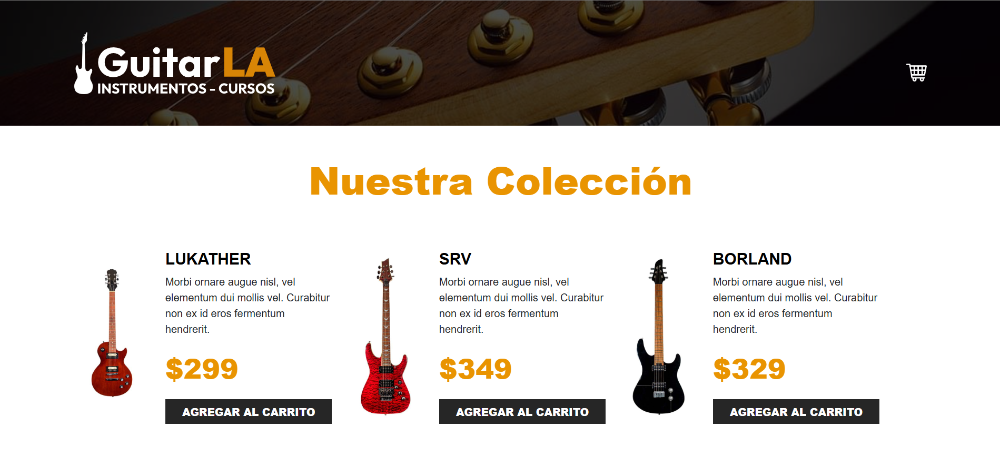

← Volver a proyectos
PERSONAL · DESARROLLO WEB
Proyectos web con React
Desarrollo de páginas y aplicaciones web orientadas a la presentación y venta de productos.

Sobre el proyecto
Conjunto de proyectos personales desarrollados para experimentar con React y aplicar conceptos de desarrollo de interfaces web modernas atraves de la implementacion de tiendas virtuales.
Objetivos
- Desarrollo de interfaces web mediante componentes.
- Aplicación de React en proyectos prácticos.
- Diseño de páginas orientadas a productos.
- Desarrollo de interfaces responsive.
- Práctica y experimentación con tecnologías web.
Resultado
Desarrollo de distintas interfaces web utilizando React, aplicando componentes reutilizables y conceptos modernos de desarrollo frontend.